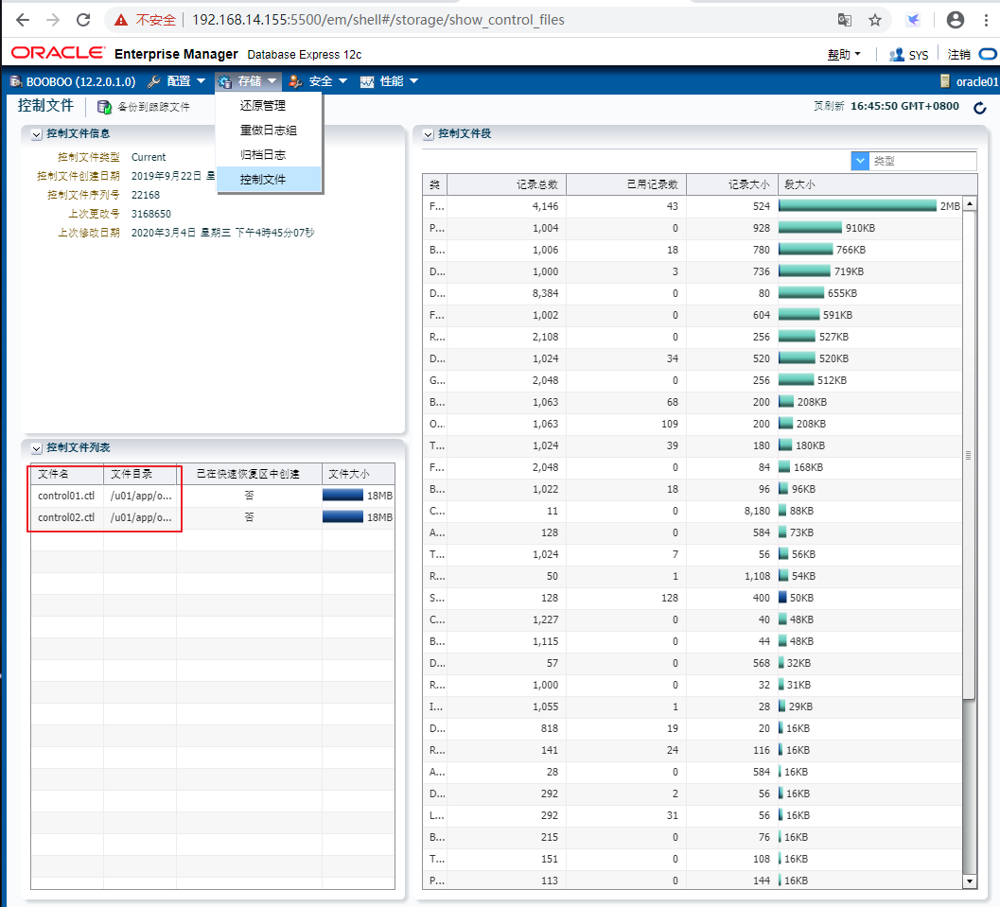

2020.03.04 BoobooWei
实践概述
在这些实践中，您将多路复用控制文件，配置快速恢复区域，配置重做日志文件以及将数据库配置为ARCHIVELOG模式。
在这些实践中，您将配置默认的备份目标，设置RMAN显示数据和时间格式，配置控制文件自动备份，配置备份保留策略以及为备份配置设备。
练习3-1：配置默认备份目标和ARCHIVELOG模式
总览
在实践中，您将确定默认的备份目标设置，设置DB_RECOVERY_FILE_DEST_SIZE初始化参数，并验证是否正在使用默认位置。
接下来，启用ARCHIVELOG模式并重新启动ORCL数据库实例。
假设条件
您将打开一个终端窗口，其中已为ORCL数据库实例设置了环境变量。使用$ LABS作为工作目录。除非另有说明，否则始终从该目录运行。
任务
**语法：**更改数据库的归档模式，请使用ALTER DATABASE带有ARCHIVELOGor NOARCHIVELOG子句的语句。
**权限：**必须以管理员权限（AS SYSDBA）连接到数据库。
sqlplus / as sysdba |
更改数据库归档模式将更新控制文件。更改数据库归档模式后，必须备份所有数据库文件和控制文件。以前的任何备份均已在NOARCHIVELOG模式下使用，因此不再可用。
所以变更归档模式后一定要备份 。
备份结果
...... |
请注意，04-MAR-20日期不包括时间（只是日期）。
练习3-2：设置RMAN的日期和时间格式
总览
在实践中，您可以设置RMAN用于显示时间戳的日期/时间格式。默认日期格式不包括时间信息。在本研讨会中，您将在同一天内执行多个备份和恢复，在某些情况下，需要确定要使用的备份。
假设条件
您已完成先前的练习。
任务
--设置NLS_LANG和NLS_DATE_FORMAT变量，以使RMAN在任何时间戳记值中包括时间信息。 |
工作提示：由于RMAN命令的输出可能会很长，因此请考虑使用SPOOL LOG TO <file> 命令将输出定向到您指定的文件。
--设置Rman输出日志 |
练习3-3：配置RMAN设置
总览
在实践中，您可以配置或确认以下任务的RMAN设置：
- 每次RMAN备份数据库中的任何内容时都要备份控制文件和服务器参数文件（SPFILE）
- 确保保留一个冗余备份
然后，您执行表空间备份以验证这些设置。
假设条件
您已完成先前的练习。
任务
--.以SYSBACKUP身份登录到RMAN会话，检查是否启用了控制文件自动备份。 |
架构报告部分数据如下：
List of Permanent Datafiles |
注意：
− 如果未连接到恢复目录，则RB segs列中将包含***作为值。当您连接到恢复目录时，它包含Yes和No。
− 在此示例中，USERS表空间是文件号7。您的USERS表空间可能具有不同的文件号。您可以将表空间备份为数据文件或表空间。该解决方案显示表空间备份。
练习3-4：配置控制文件
总览
在实践中，您可以多路复用控制文件以减少失败或数据丢失的机会。您使用以下工具：
- Enterprise Manager Database Express 12（EM Express）以查看现有的控制文件（作为SYSDBA）
- SQL * Plus和一个编辑器来更新初始化参数文件中的CONTROL_FILES参数（作为SYSDBA）
假设条件
您已完成之前的练习。
任务
您的总体任务是验证您至少有两个控制文件，每个控制文件位于不同的磁盘上，以确保冗余。该实践还向您介绍了用于学习目的的不同工具。
1.使用浏览器，访问 EM Express

2.以SYSDBA用户身份登录SQL * Plus
sqlplus / as sysdba |
练习3-5：Cloud Control中的恢复设置
总览
该练习中，您将确认并配置设置以减少失败或数据丢失的机会。本练习还旨在向您介绍可用于备份和恢复的不同工具。
假设条件
您已经完成了前面的练习。
任务
1.使用浏览器，启动企业管理器云控制
2.使用提供给您的密码以SYSMAN用户身份登录。
3.选择当前的实例进行管理
4.单击可用性>备份和恢复>恢复设置。
云管理控制中的备份恢复配置，可以理解为图形化界面配置RMAN，非常方便。
练习3-6：配置重做日志文件
总览
该实验中，您检查每个重做日志组中有多少成员。确保每个组中至少有两个重做日志成员。每个组中的一个成员应存储在快速恢复区中。
假设条件
您已完成先前的练习。
任务
1使用Cloud Control 进行配置管理，单击“ 管理”>“存储” >“ 重做日志组”
2使用命令行管理
--查看日志的工作工作状态 |